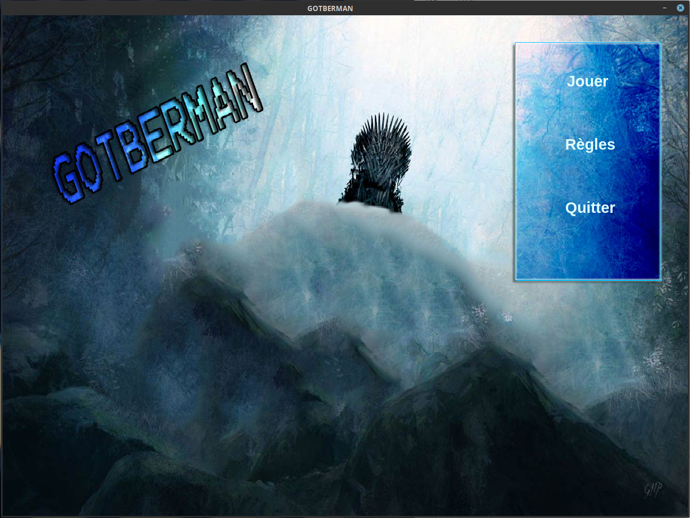
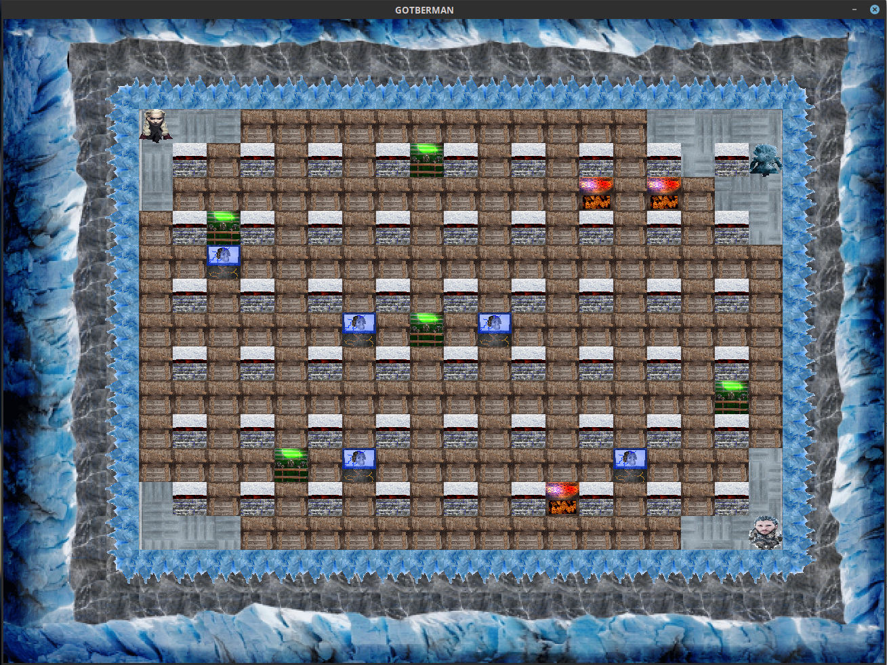
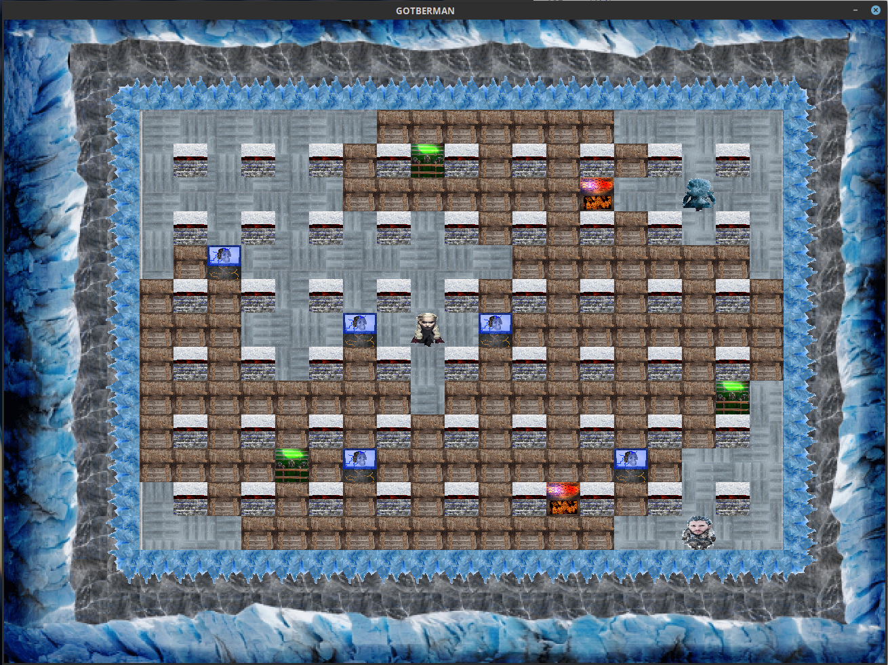
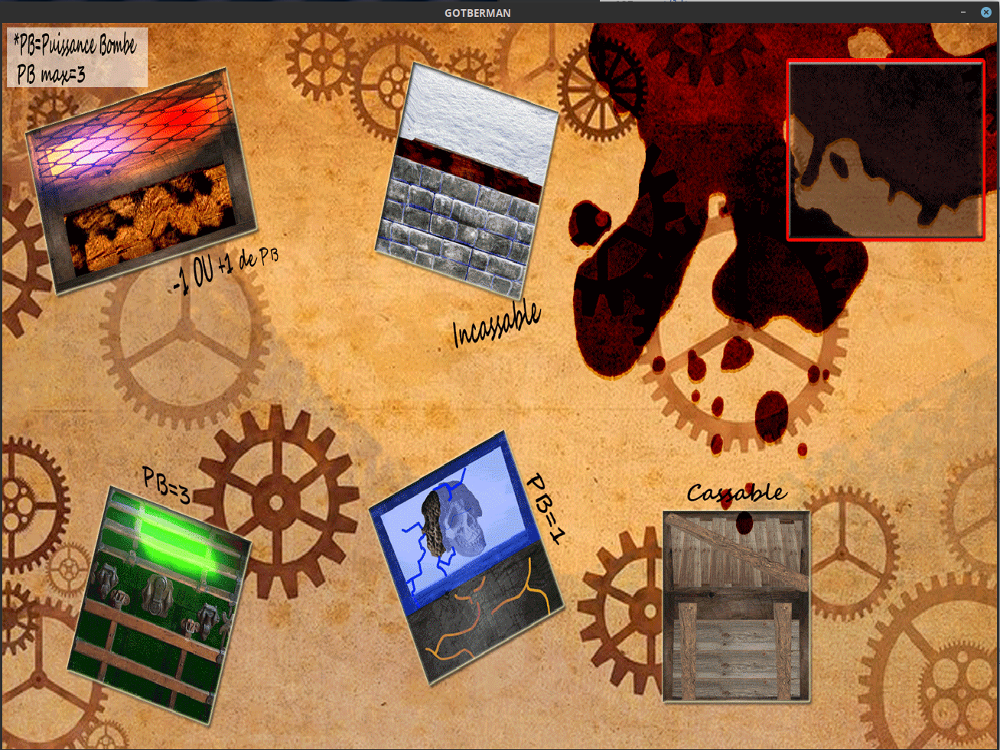

<div class="modal-dialog modal-lg modal-dialog-centered" role="document">
  <div class="modal-content">
    <div class="modal-header text-center pb-0">
      <h1 class="p-2 m-auto">Jeu : Bomberman</h1>
      <button type="button" class="btn-close" data-bs-dismiss="modal" aria-label="Close"></button>
    </div>
    <div class="modal-body pt-2">
      <p class="text-uppercase text-center date mb-2"><i class="fas fa-calendar-alt"></i> Avril - Juin 2019</p>
      <p class="text-center git"><i class="fab fa-github"></i> <a href="https://github.com/Marie287/Bomberman" target="_blank">github.com/Marie287/Bomberman</a></p> 
      <div class="accordion accordion-flush" id="accordion_bomb">
        <div class="accordion-item">
          <h2 class="accordion-header" id="acc_bomb_1">
            <button class="accordion-button collapsed" type="button" data-bs-toggle="collapse" data-bs-target="#collapse_bomb_1" aria-expanded="false" aria-controls="collapse_bomb_1">
              Description
            </button>
          </h2>
          <div id="collapse_bomb_1" class="accordion-collapse collapse" aria-labelledby="acc_bomb_1" data-bs-parent="#accordion_bomb">
            <div class="accordion-body">
              <div class="text-center">
                <i class="fab fa-python icon_outils" title="Python3"></i>
              </div>
              <p class="text-center" style="color: #846828;">
                <span class="text-uppercase" style="letter-spacing: 1px;">Type de réalisation </span>: Projet à l'IUT de Lens
              </p>
              <p>
                Nous avons réalisé un jeu, à deux en Python à l'aide de la librairie PyQt. Cette librairie permet de créer des interfaces graphiques en Python.
              </p>
              <p>
                Le sujet imposé était de faire un jeu de type Bomberman. Connaissez-vous ce jeu là ? Non ? Le principe est simple : c'est un jeu avec un ou plusieurs joueurs 
                qui s'affrontent en posant des bombes.
              </p>
              <p>
                Le thème que nous avons choisi est celui de la célèbre série Game of Thrones (GOT). Voilà pourquoi nous l'avons plutôt nommé "GotBerman" ✔.
              </p>
              <p>Mon binôme a su créer des graphismes directement liés à la série (personnages et décors). Moi, je me suis principalement occupée du code du jeu.</p>
            </div>
          </div>
        </div>
        <div class="accordion-item">
          <h2 class="accordion-header" id="acc_bomb_2">
            <button class="accordion-button collapsed" type="button" data-bs-toggle="collapse" data-bs-target="#collapse_bomb_2" aria-expanded="false" aria-controls="collapse_bomb_2">
              Fonctionnalités
            </button>
          </h2>
          <div id="collapse_bomb_2" class="accordion-collapse collapse" aria-labelledby="acc_bomb_2" data-bs-parent="#accordion_bomb">
            <div class="accordion-body">
              <ul>
                <li>Possibilité de jouer à deux sur un même clavier</li>
                <li>Adversaire artificiel</li>
                <li>Musique de fond</li>
              </ul>
            </div>
          </div>
        </div>
        <div class="accordion-item">
          <h2 class="accordion-header" id="acc_bomb_3">
            <button class="accordion-button collapsed" type="button" data-bs-toggle="collapse" data-bs-target="#collapse_bomb_3" aria-expanded="false" aria-controls="collapse_bomb_3">
              Ce que j'en ai pensé
            </button>
          </h2>
          <div id="collapse_bomb_3" class="accordion-collapse collapse" aria-labelledby="acc_bomb_3" data-bs-parent="#accordion_bomb">
            <div class="accordion-body">
              <p>Voilà donc le premier jeu que j'ai créé ! C'était à la fois amusant, et super intéressant. J'ai adoré ce projet là.</p>
              <p>
                La découverte de la librairie PyQt a été difficile à prendre en main, mais avec de l'acharnement, et de la persévérance, nous 
                avons réussi à produire un jeu fonctionnel et visuellement agréable.
              </p>
              <p>
                Le délai de rendu du projet était très court, alors nous n'avons pas pu approfondir chaque fonctionnalité comme nous l'aurions voulu, mais globalement, 
                je suis très fière de ce jeu ! 😄<br>
                L'organisation était très importante ici : il faut savoir se concentrer sur l'essentiel, mais aussi connaître la priorité des tâches à réaliser.
              </p>
              <p>Notre note était d'ailleurs très bonne ! 🥳🎉</p>
            </div>
          </div>
        </div>
      </div>
      
      <br>
      <div id="carousel_bomb" class="carousel slide" data-bs-ride="carousel">
        <div class="carousel-indicators">
          <button type="button" data-bs-target="#carousel_bomb" data-bs-slide-to="0" class="active" aria-current="true" aria-label="Slide 1"></button>
          <button type="button" data-bs-target="#carousel_bomb" data-bs-slide-to="1" aria-label="Slide 2"></button>
          <button type="button" data-bs-target="#carousel_bomb" data-bs-slide-to="2" aria-label="Slide 3"></button>
          <button type="button" data-bs-target="#carousel_bomb" data-bs-slide-to="3" aria-label="Slide 4"></button>
        </div>
        <div class="carousel-inner">
          <div class="carousel-item active">
            
          </div>
          <div class="carousel-item">
            
          </div>
          <div class="carousel-item">
            
          </div>
          <div class="carousel-item">
            
          </div>
        </div>
        <button class="carousel-control-prev" type="button" data-bs-target="#carousel_bomb"  data-bs-slide="prev">
          <span class="carousel-control-prev-icon" aria-hidden="true"></span>
          <span class="visually-hidden">Previous</span>
        </button>
        <button class="carousel-control-next" type="button" data-bs-target="#carousel_bomb"  data-bs-slide="next">
          <span class="carousel-control-next-icon" aria-hidden="true"></span>
          <span class="visually-hidden">Next</span>
        </button>
      </div>
    </div>
  </div>
</div>